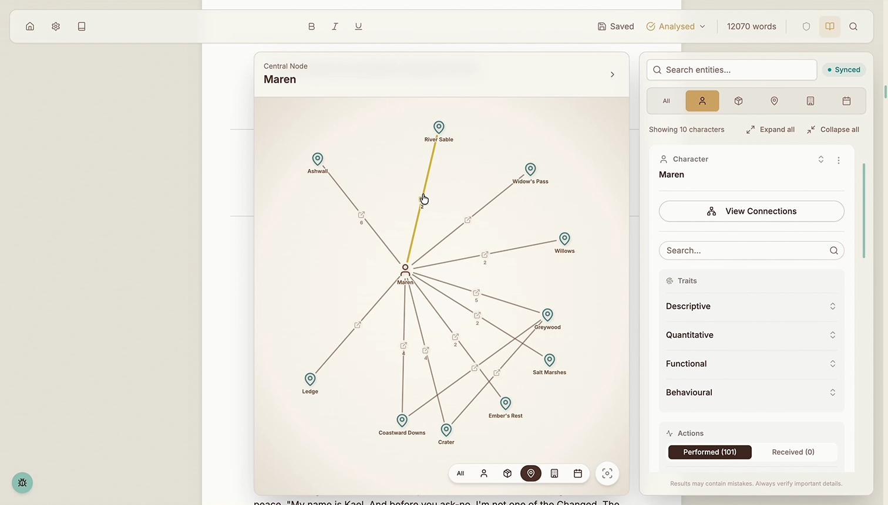
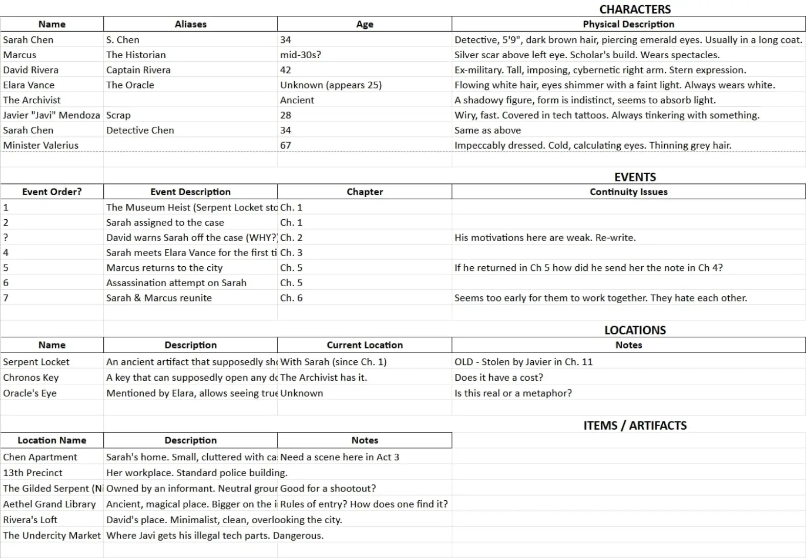
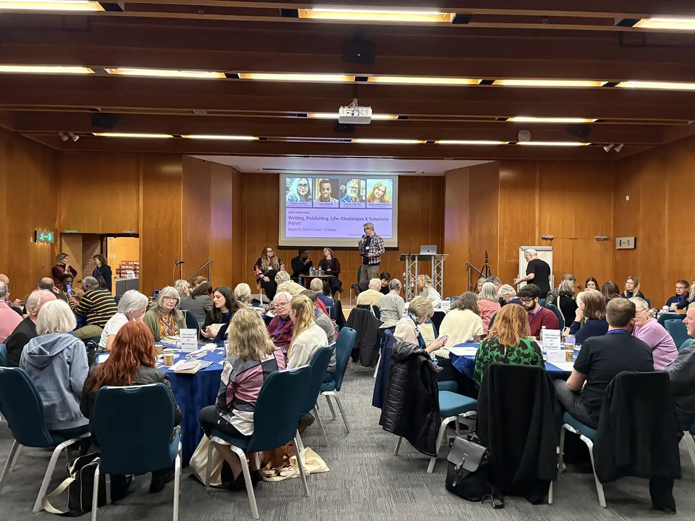
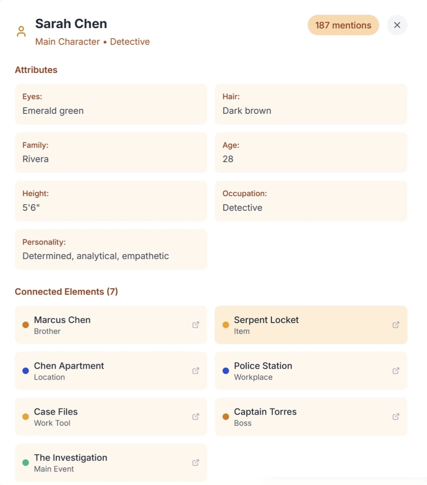
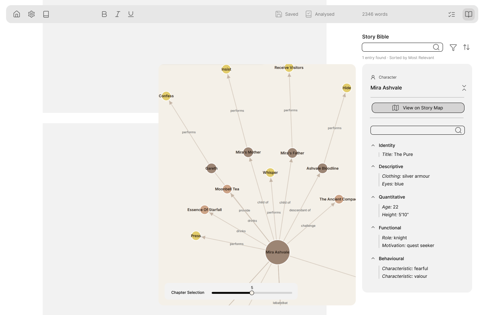
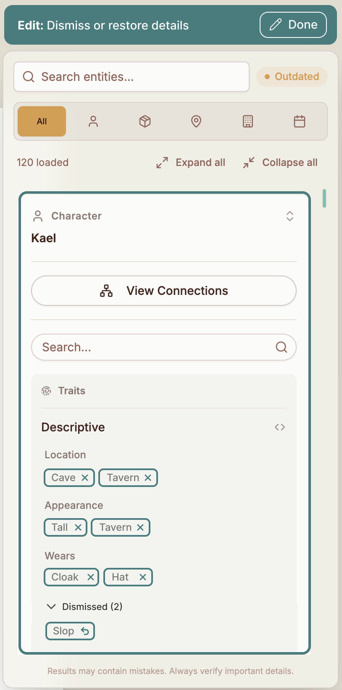

TrueTale is an intelligent writing app for professional fiction authors. It automatically identifies and organises story elements, and lets writers search their story by meaning.
My role was to lead product 0→1, bringing the product from discovery to beta.
The outcome was a live production product, with retained active users.

Modern authors struggle to track character attributes, timeline logistics, and intersecting plot threads. Current tools either offer no insight, or distract authors with manual tools that require hours of data entry.
User need Independent authors are under pressure to publish frequently (3–6 books a year) to satisfy Amazon's algorithms. This speed necessitates faster drafting and editing cycles, so authors need tools that help them write faster and with greater confidence.

Scoping & priorities Given the product was bootstrapped, careful scoping and prioritisation was necessary to deliver on the value proposition with such limited capacity and financial resources.
Business & user need trade-offs The bootstrapped model required keen focus on managing AI inference costs, while meeting users' high expectations for quality and latency.
Understanding the author To seamlessly fit into authors' existing workflows, structured user surveys focussed on auditing their pain points and existing tool stacks.
Understanding the industry Attending industry events and meetups to interview a range of potential users sharpened my sense of the user persona best served by the product.
Self-published indie authors working in complex genres, and publishing at high cadences, were identified as our Ideal Customer Profile.
Understanding the technology I collaborated closely with engineering to refine the technical architecture, such as developing test cases for NLP, RAG and agentic systems.
These gathered metrics on quality, cost and latency, all of which were key concerns for our users.
Technical constraints also influenced UX — for example, my decision to pivot from real-time to triggered analysis of the text was necessary to reduce compute waste by 98%, while shaping which user flows were feasible.

Scoping the feature set User interviews led me to hypothesise that accurate narrative extraction was a key driver for our users to perceive usability and value.
This aligned with our technical discovery that quality of extraction from the narrative was the turnkey for useful results.
Prioritising the Story Bible feature, which extracts and organises elements from the user's narrative, allowed us to focus on quality execution while still delivering a compelling value proposition.
Note A story bible is a comprehensive reference document used by creators to organise the foundational details of a narrative.
Cards list An initial direction explored presenting information in a list of cards within a pop-up modal.
However, this relatively unstructured information architecture scaled poorly with larger quantities of information, and lacked insight into the structure of the narrative.
Map visualisation User surveys had surfaced requests for more of a visual 'map', a known pattern for plotting narratives.
Through experimentation with different approaches and feedback from test users who highlighted an overwhelming amount of information, I increasingly pushed against representing every granular detail the technical architecture was able to extract.
Instead, I focussed on filtering and organising only the most relevant information to a user.

Wireframing I opted to partially draw from Shadcn design system components for speed of development and ease of maintenance compared to a completely novel design system.
Initial development focussed on the information architecture of the details of individual entities from the narrative, making these self-contained rather than cluttering the map.
I then fleshed out how these cards would be embedded into the wider user flow of searching and navigating through the narrative.

The non-deterministic nature of AI-native technology meant we couldn't be completely certain our extraction would always be 100% accurate. I designed a flow to allow users to remove hallucinated entries and merge duplicates.

Achieved a 19% conversion rate of waitlist users converting into paid users within two weeks.
Retained 100% of users from first to second month of live product with Story Bible as flagship feature. Predefined success criteria was set at achieving >70% 30-day retention.
Session analytics demonstrated active users returning repeatedly for extended sessions.
Positive feedback on map visualisation received from actively self-publishing author.
On the industry I gained a deep understanding of our target user persona and the industry dynamics they operate within, as well as their expectations and priorities.
On process If repeating the design process, I would have invested more focus in a broader range of lightweight interactive prototypes for user testing, having underestimated lead times for development of the core technical architecture.
On next steps Technical complexity constrained some of the capabilities I had proposed, such as adding new Story Bible entries while maintaining the 'ground truth' of the narrative extraction.